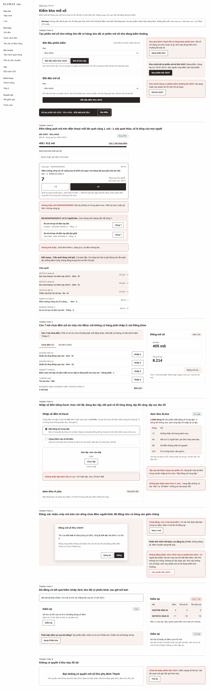
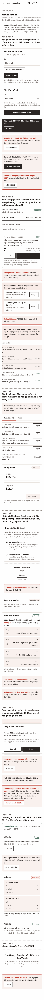
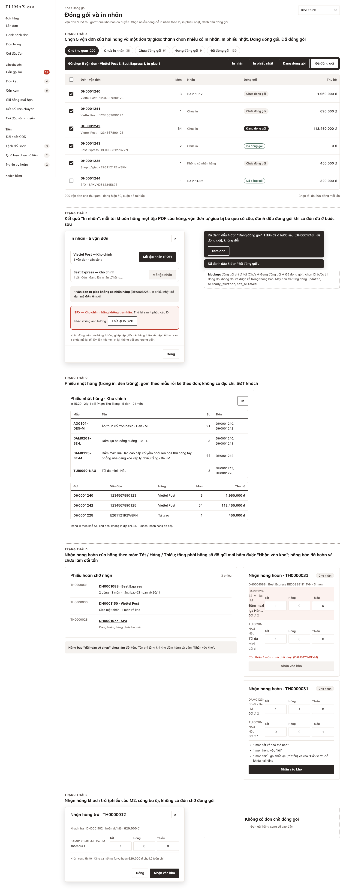
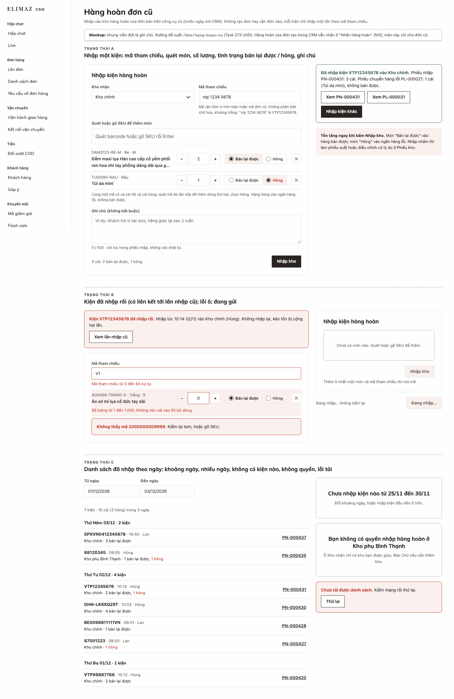
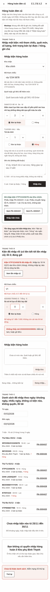

CRM ELIMAZ · M7 · TASK M7-02 (247) · 28/11/2026
Mockup M7: Kiểm kho mở sổ và Hàng hoàn đơn cũ, Hiện tại / Đề xuất
Hai màn của M7 đợt này (màn 10 và 13 trong bảng của kế hoạch), vẽ bằng đúng hệ thiết kế CRM đã duyệt ở M1 (docs/mockups/m1/m1.css) và thành phần M2, M3: chỉ màu, cỡ chữ, bo góc có sẵn; không có gì chỉ hiện khi rê chuột; nút trên điện thoại cao ít nhất 44 px. Mỗi màn có nhiều trạng thái xếp dọc (khung viền đứt là ghi chú của mockup). Mười ba màn còn lại của M7 vẽ cùng task màn của chúng ở đợt sau.
Đọc trang này thế nào
- Hiện tại: ảnh mockup đã duyệt của màn gần nhất đang có (Kiểm kho của M1, Nhận hàng hoàn của M3); console đang làm đúng các mockup này.
- Đề xuất: ảnh 1512 × 767 (laptop của chủ shop), 390 × 844 và 360 × 800 (điện thoại của nhân viên kho). Bấm ảnh để xem cả trang.
- Ảnh đề xuất và tự soát sinh lại bằng
docs/mockups/m7/soat.mjs.
(10) Kiểm kho mở sổ
Mở mockupĐường: Kho → Kiểm kho → Mở sổ · đề xuất /kho/mo-so, /kho/mo-so/:id · Task 273 (M7-28). Ca kiểm: MO02. Trạng thái: A tạo phiên (kho trống), kho đã có hàng, đã có phiên mở sổ, đang kiểm thường · B đếm bằng quét mã trên điện thoại: +1 mỗi lần quét, −1, số là tổng mọi người, mã lạ, mã trùng hai người bán, không bớt dưới 0, mất mạng chờ gửi cùng khóa · C còn 7 mã chưa đếm, Nhập 0, nút Đăng khóa · D nhập Excel: hai chế độ, đang đọc, kết quả và lỗi từng dòng, tệp đã cộng, tệp sai, không đọc được · E xác nhận đăng, còn mã chưa đếm (422), người khác đã đăng (409), kho có hàng vào giữa chừng · F đã mở sổ, kiểm lại khớp / lệch / đã có phiếu khác, sửa bằng phiếu điều chỉnh · G không quyền, lỗi tải
Hiện tại


Đề xuất





(13) Hàng hoàn đơn cũ
Mở mockupĐường: Kho → Hàng hoàn đơn cũ · đề xuất /kho/hang-hoan-cu · Task 273 (M7-28). Ca kiểm: MO08. Trạng thái: A nhập một kiện: kho, mã tham chiếu (chuẩn hóa chữ hoa, bỏ khoảng trắng), quét món, số lượng, Bán lại được / Hỏng, ghi chú; kết quả phiếu nhập và phiếu chuyển hàng lỗi · B kiện đã nhập rồi (409, liên kết lần nhập cũ), mã tham chiếu ngắn, số lượng 0, mã lạ, chưa có món, đang gửi · C danh sách theo ngày, khoảng ngày, 3 ngày 7 kiện, không có kiện nào, không quyền, lỗi tải
Hiện tại



Đề xuất





Ca kiểm của spec
| Ca | Nội dung | Vẽ ở |
|---|---|---|
| MO02 | Kiểm đếm toàn bộ kho để mở sổ; tồn mở sổ bằng đúng số đếm; không đăng hai lần | (10) A–F |
| MO08 | Hàng hoàn của đơn cũ về kho sau ngày mở: phiếu nhập có mã tham chiếu duy nhất, hàng hỏng vào ngăn hỏng (Q11) | (13) A–C |
Hành vi khác màn đã có ở M1–M6
Mỗi dòng duyệt riêng (kế hoạch Task 247 Step 3). Claude chốt thay chủ shop 28/11 theo giao việc của điều phối M7; chủ shop đổi ý dòng nào thì ghi vào README.md.
| # | Màn | Đề xuất | Hiện tại | Duyệt |
|---|---|---|---|---|
| HV01 | Kiểm kho | Kiểm kho mở sổ là màn riêng, không có mục menu (việc làm một lần mỗi kho): vào từ màn Kiểm kho, nơi thẻ "Bắt đầu phiên kiểm" có thêm nút "Mở sổ kho này" khi người dùng có quyền mở sổ kho đó (kho đã có hàng thì bấm sẽ báo); kho đã có phiên mở sổ thì báo và dẫn vào phiên đó ("Vào phiên MS-0001"). | Kiểm kho (M1) chỉ có phiên thường. | OK (Claude, 28/11) |
| HV02 | Menu | Mục mới "Hàng hoàn đơn cũ" ở nhóm Kho, ngay sau "Nhận hàng hoàn"; chỉ người có quyền nhập hàng hoàn cũ thấy. | Không có. | OK (Claude, 28/11) |
| HV03 | Mở sổ · đếm | Mỗi lần quét gửi ngay một lần cộng 1 lên máy chủ; nhiều người cùng đếm một mã thì số cộng dồn, không ghi đè; số to là tổng của mọi người, kèm người đếm lần cuối. | Kiểm kho thường: số của dòng là số đặt, lưu sau khi ngừng quét chưa tới 1 giây; hai người đếm cùng mã thì người lưu sau ghi đè. | OK (Claude, 28/11) |
| HV04 | Mở sổ · đếm | Sửa quét thừa bằng nút −1 lớn; không có ô gõ số để đặt lại (gõ đè làm mất số người khác vừa cộng). Mã không có hàng dùng nút "Nhập 0" ở danh sách chưa đếm. | Ô số gõ trực tiếp kèm − / +. | OK (Claude, 28/11) |
| HV05 | Mở sổ · đếm | Mất mạng: lần quét xếp hàng trên máy, mỗi dòng "Chờ gửi · +1", có mạng lại tự gửi đúng các lần đó (cùng khóa, không đếm trùng); hộp nhắc không đóng trang. | Dòng hiện "Chưa lưu được, đang thử lại". | OK (Claude, 28/11) |
| HV06 | Mở sổ | Phải có số cho mọi mã đang bán mới đăng được: thanh tiến độ "405 / 412 mã", tab "Chưa đếm (7)" lấy từ máy chủ; nút Đăng khóa kèm lý do. | Kiểm kho thường chỉ sửa mã đã quét; mã không quét giữ nguyên tồn. | OK (Claude, 28/11) |
| HV07 | Mở sổ | Không có bước "Xem chênh lệch" (kho trống, mọi số là số mới); Đăng hỏi xác nhận số mã, tổng số cái; đăng xong có "Kiểm lại" (mốc A của đêm mở) và lối sang phiếu điều chỉnh. | Xem chênh lệch → Áp dụng. | OK (Claude, 28/11) |
| HV08 | Mở sổ · quyền | Đăng mở sổ dùng quyền "mở sổ kho" theo kho: Chủ, Quản lý và nhân viên kho được giao kho đó đăng được (vai trò mẫu của kế hoạch, Task 260). | Áp dụng kiểm kho thường chỉ Chủ, Quản lý. | OK (Claude, 28/11) |
| HV09 | Mở sổ · Excel | Nhập số đếm từ tệp .xlsx (cột Mã, Số đếm) vào phiên đang đếm: chế độ "Đặt bằng số trong tệp" (mặc định, nhập lại không đổi gì) hoặc "Cộng thêm" (mỗi tệp một lần); máy đọc tệp ở nền; báo lỗi từng dòng bằng số dòng và câu lỗi, không chép nội dung ô. | Kiểm kho không nhập tệp. | OK (Claude, 28/11) |
| HV10 | Hàng hoàn cũ | Màn riêng cho đơn của công cụ cũ: nhập theo mã tham chiếu gõ tay (mã vận đơn hoặc mã đơn cũ), không gắn đơn hay vận đơn; mỗi kiện nhập một lần (trùng báo và dẫn tới lần nhập cũ); tình trạng chỉ "Bán lại được" / "Hỏng", không có "Thiếu" và không so với số đã gửi; bấm Nhập kho là tồn tăng ngay (phiếu nhập, cộng phiếu chuyển hàng lỗi khi có món hỏng). | Nhận hàng hoàn (M3) theo phiếu hoàn của đơn CRM: Tốt / Hỏng / Thiếu, tổng phải bằng số đã gửi. | OK (Claude, 28/11) |
| HV11 | Hàng hoàn cũ | Mỗi dòng một tình trạng; cùng một mã có cả cái tốt và cái hỏng thì quét lần nữa để có dòng thứ hai. Danh sách đã nhập nhóm theo ngày, mặc định 7 ngày gần nhất. | — | OK (Claude, 28/11) |